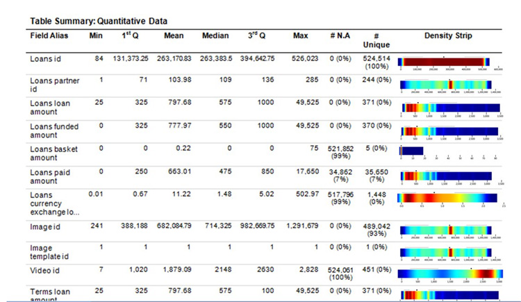
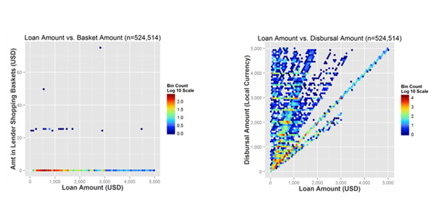
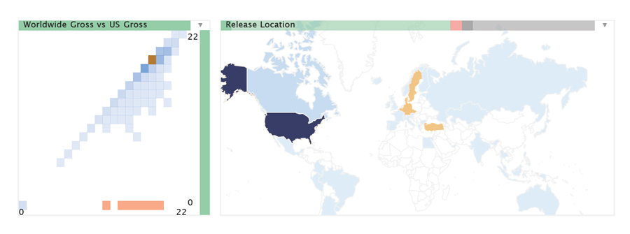

|
VTDP: Preliminary Data Assessment and Wrangling
Data assessment occurs early in the process of designing and building a new visualization, typically soon after an analytic problem is posed. Usually a new analytic task is first proposed in a very general way, but it is only once a source of data is identified and it characteristics inventoried that more precise and meaningful analytic questions can be develope. Sometimes data assessment will lead to the project being dropped. More often, once the nature of the data is known more avenues for analysis are exposed.
Example: Initial question: can social media tell us about a flu epidemic? Data assessment on Twitter data shows, that is publically available, although large amount come at a significant cols. It also reveals that a certain percentage of tweets are georeferenced and that there are approximately 200 million active users world wide.
Some of the basic questions about the nature of a data set are the following.
- How big is it?
- How many attributes are there and what are their characteristics (quantitiative or categorical)?
- Can we extract a significantly smaller sub-set to meet our needs?
- How much missing data is there?
- Does it have geospatial attributes?
- Does it have temporal attributes?
- How is it distributed? Does it have extreme outliers? For each categorical attribute how many categories are there?
- Can it be characterized as a linked network? If so what is the distribution of node degrees?
Data wrangling is the process of converting data from its raw form into a format that can be ingested by data processing tools [1]. Visualization can be a useful part of data wrangling, especially as a tool in appreciating issues relating to distribution of values. Below is an image from TukeyPlot TM an Oculus tool that summarizes data attributes using a form of one dimensional heat map. This tool also has the ability to zoom in continuously to resolve more detail. Visualizations of two dimensional distributions can also be valuable.

Part of an Oculus Tukey Plot file showing the distribution of data values.

An Oculus Tukey Plot showing pairwise distributions of variables.
From [2]: Map assessing 2D outliers in a binned scatter plot. In this case the data show movies with a high worldwide gross but low US gross. The plot confirms that these movies were released outside of the US.
Data wrangling of raw network data is still in its infancy, but [3] provides some approaches to the problem.
Work needed here on the cognitive processes involved in data wrangling
References
- Kandel, S., Paepcke, A., Hellerstein, J., & Heer, J. (2011, M). Wrangler: Interactive visual specification of data transformation scripts. ACM CHI, 2011, 3363-3372.
- Kandel, S., Parikh, R., Paepcke, A., Hellerstein, J. M., & Heer, J. (2012). Profiler: Integrated statistical analysis and visualization for data quality assessment. In Proceedings of the International Working Conference on Advanced Visual Interfaces. 547-554. ACM.
- Heer, J. and Perer, A. (2011) Orion: A system for modeling, transformation and visualization of multidimensional heterogeneous networks. In Visual Analytics Science and Technology (VAST), 51-60.
|